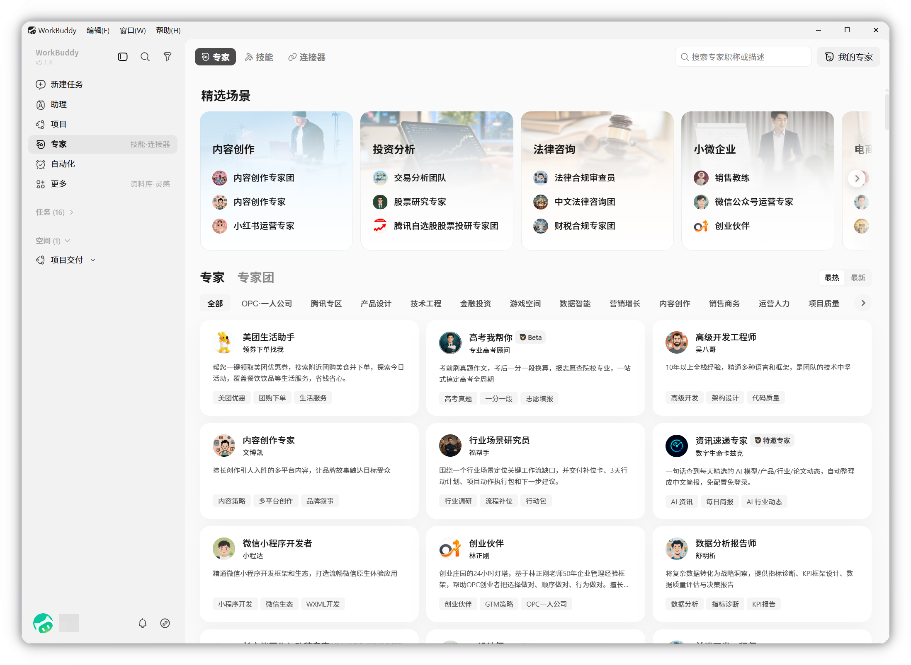
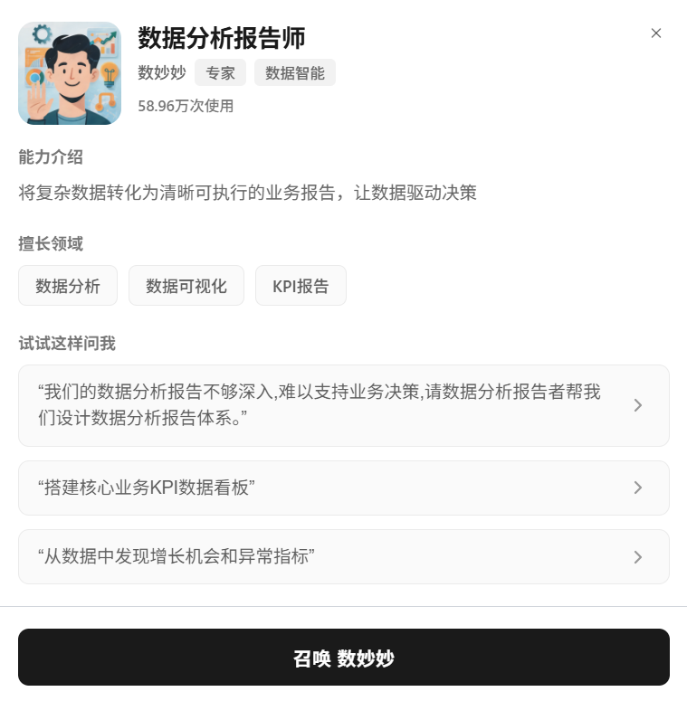
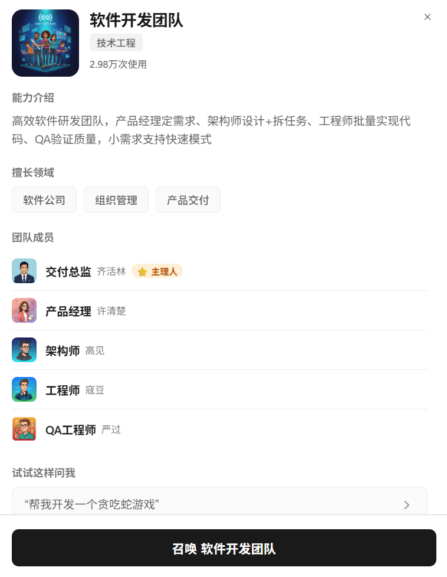
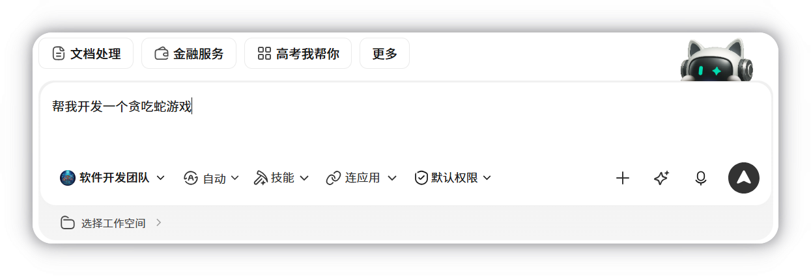
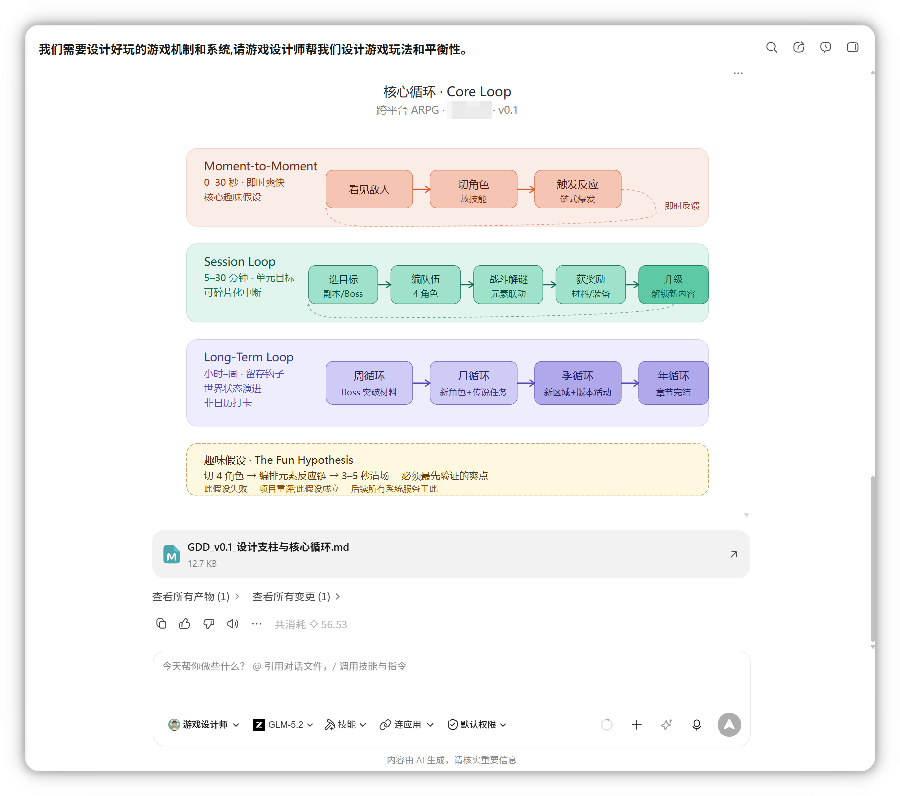
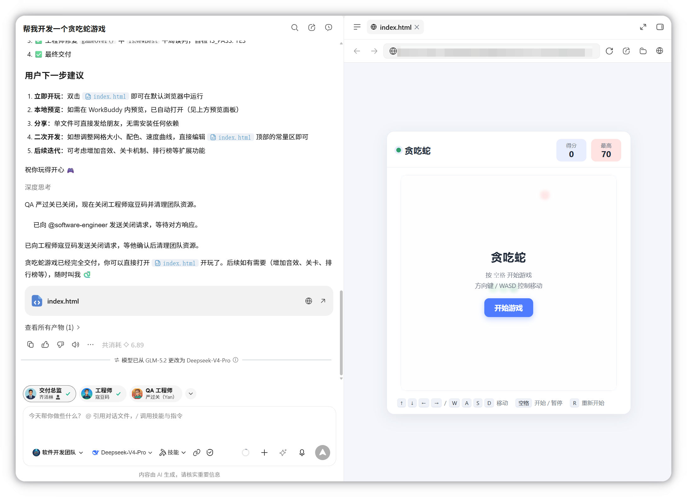
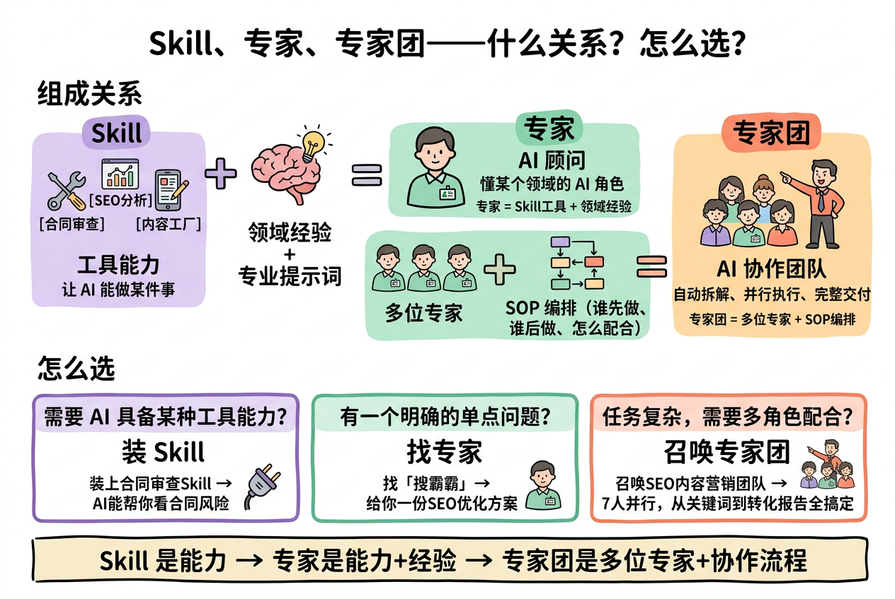

专家
专家用于为 WorkBuddy 配置专业角色，在特定领域中能以更明确的方法和视角完成任务。
概述
专家板块包含专家中心和我的专家。在专家中心的专家和专家团支持按行业分类浏览，召唤他们为你服务；在我的专家创建属于你的专家，分享专业知识。
专家是「角色切换」机制
以「人设 + 方法论 + 工具链」让 WorkBuddy 用特定领域专家身份执行任务。
专家团是「协作执行」机制
专家团由多位专家分工协作，由团长自动拆解、并行执行并整合交付。
说明
专家本身不主动获取系统权限，仅处理您主动提供的对话与上传文件。当配备了 Skill / MCP 时才会在您的授权下间接访问文件或外部服务。
如何使用
1. 打开专家中心
在左侧边栏点击专家，找到感兴趣的专家/专家团。

专家卡片展示能力介绍、擅长领域和任务示例，例如：

专家团卡片展示能力介绍、擅长领域、团队成员和任务示例，例如：

2. 召唤专家/专家团
点击召唤专家/专家团，进入对话界面：

3. 描述任务
专家： 将任务告诉 WorkBuddy 将会按照该角色的专业视角和方法完成任务。

专家团： 用自然语言描述任务后，专家团团长自动拆解、分配、执行并返回完整结果：

Skill VS 专家 VS 专家团

| 维度 | Skill | 专家（Agent 型） | 专家团（Team 型） |
|---|---|---|---|
| 组成关系 | 工具能力：让AI能做某件事 | AI顾问：懂某个领域的 AI 角色 | Al协作团队：自动拆解、并行执行、完整交付 |
| 怎么选 | 需要 AI 具备某种工具能力 | 有一个明确的单点问题 | 任务复杂，需要多角色配合 |
- Skill 是能力
- 专家 是能力+经验
- 专家团 是多位专家+协作流程
注意事项与重点提示
信息收集与使用
| 信息类型 | 收集情况 | 用途 |
|---|---|---|
| 账户信息 | 必要 | 用户 ID、昵称，用于身份识别与会话管理 |
| 对话内容 | 必要 | 您输入的文本与指令，用于生成回复、完成任务 |
| 上传文件 | 非必要 | 仅在您主动上传时收集 |
| 工作区文件 | 非必要 | 仅在您通过 Skill 明确触发时间接访问 |
说明
使用专家功能时 WorkBuddy 不收集通讯录、精确地理位置、设备唯一标识、生物特征、本产品外的浏览历史。
积分消耗提醒
专家团会并行调用多位专家、涉及多轮模型交互，积分消耗通常为单专家的 3–5 倍（以实际任务为准）。
第三方共享
专家本身不直接访问外部系统；若配备的 Skill / MCP 调用了外部服务，请按对应模块边界处理。
免责声明
WorkBuddy 生成内容仅供参考，不构成专业意见；涉及医疗、法律、投资、合规等重大决策建议咨询专业人士。
使用建议
- 专家是 AI 角色化辅助能力，与具备法定资质的专业服务存在差异，请在重要场景下结合专业意见使用。
- 召唤专家团前请关注积分余额，避免任务执行中途因积分不足而中断。
- 上传文件、提交对话内容时，请确认您拥有合法权利或已获得相关授权，注意保护他人个人信息与商业秘密。